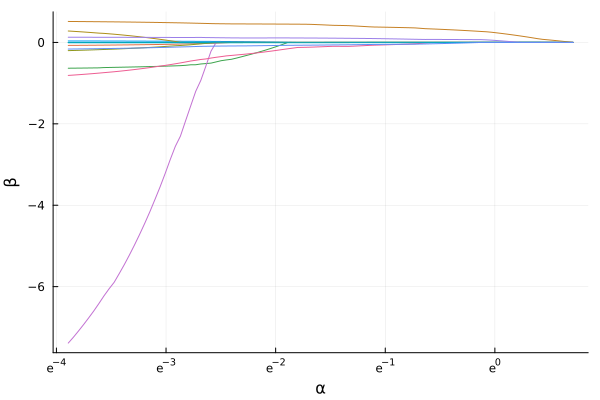

Tutorial
Introduction
SLOPE (Sorted L-One Penalized Estimation) is a type of sparse regression problem that uses a sorted L1-norm penalty to induce both sparsity and clustering in the coefficients of a generalized linear model. The latter differentiates SLOPE from other sparse regression techniques like the lasso.
SLOPE minimizes the following objective function:
\[\frac{1}{n} \sum_{i=1}^n f(y_i, x_i^\intercal \beta) + \alpha \sum_{j=1}^p \lambda_j |\beta_{(j)}|.\]
where $f(y,\eta)$ is the negative log-likelihood contribution of a single observation $(y, \eta)$. $\beta_{(j)}$ is the $j$-th coefficient, $\beta_0$ is the intercept, and $\lambda$ is a decreasing sequence of regularization weights. $x_i$ is the $i$th row of the design matrix, and $n$ is the number of observations.
Fitting Models
The main entry point for fitting SLOPE models is the slope() function. It takes as input a design matrix X and a response vector (or matrix) y.
In the following example, we fit a SLOPE model to the Boston housing dataset from the RDatasets package, predicting the crime rate (Crim) using all other features.
using SLOPE
using Plots
using RDatasets
boston = dataset("MASS", "Boston")
x = Matrix(boston[:, Not(:Crim)])
y = boston[:, :Crim]
fit = slope(x, y)SLOPE fit
Family: gaussian
Predictors: 13
Intercept: Yes
Regularization path:
Length: 100 steps
Alpha range: 0.0204 to 2.04
Path summary (first and last 5 steps):
alpha n_nonzero
2.04 0
1.95 2
1.86 2
1.77 2
1.69 2
...
0.0246 11
0.0235 11
0.0224 11
0.0214 11
0.0204 11 SLOPE features plotting recipes for visualizing the coefficient paths, so you simply call plot() on the fitted model after having loaded the Plots package.
plot(fit)GKS: cannot open display - headless operation mode active
There are also several convenience functions for working with the fitted model, such as coef() for extracting coefficients at specific regularization levels.
coef(fit, index=8)13×1 SparseArrays.SparseMatrixCSC{Float64, Int64} with 2 stored entries:
⋅
⋅
⋅
⋅
⋅
⋅
⋅
0.09334018365893641
0.004148212922107097
⋅
⋅
⋅
⋅